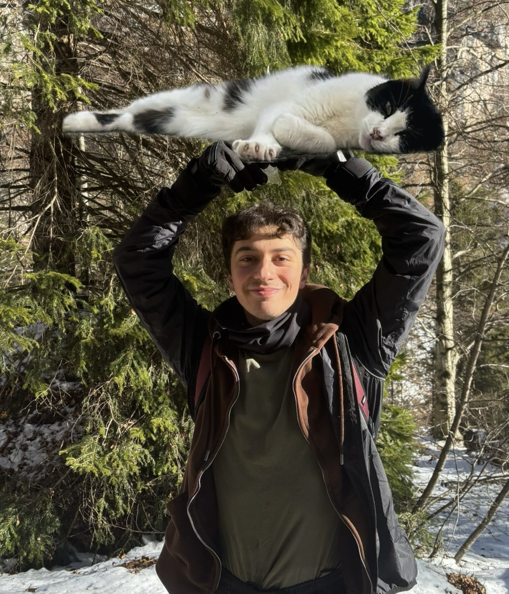

★★★★★
“Un'esecuzione splendida, ricca di emozione e sensibilità. Un violinista davvero talentuoso!”
Violinista
Breve presentazione in due righe: lo stile, il repertorio preferito e ciò che lo emoziona sul palco.

VOCI E TESTIMONIANZE
La musica prende vita nelle emozioni che lascia.
“Un'esecuzione splendida, ricca di emozione e sensibilità. Un violinista davvero talentuoso!”
“Grande tecnica e presenza scenica. È stato un piacere ascoltarlo dal vivo.”
“Un concerto bellissimo, con un suono elegante ed espressivo. Complimenti!”